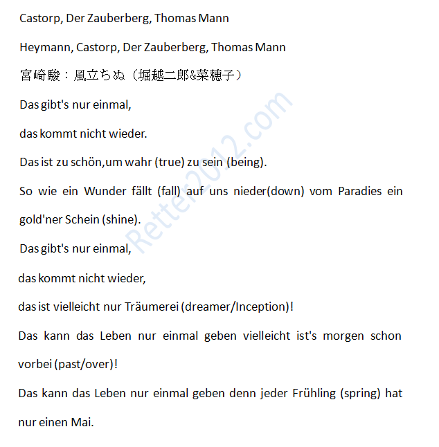

返回主页
Das gibt's nur einmal

it doesn't happen again.
不会再有了
It is too beautiful to be true.
这一切都美得无法实现
Like a miracle a golden glow from paradise shines down upon us.
正如奇迹一般发光，
从天堂那里向我们照耀而下
It only happens once,
这是唯一的一次
it doesn't happen again,
不会再发生了
it is perhaps only dreaming!
可能只能做梦了！
It can only happen once in a lifetime,
在一生中只能出现一次
perhaps tomorrow it is already over!
可能明天这一切都会结束
It can only happen once in a lifetime,
在一生中只能出现一次
for every Spring has only one May.
正如每年春天只能有一个
Where words fail, music speaks. Hans Christian Andersen
Wenn Worte fehlen, spricht die Musik.
德语歌曲：平安夜
足球世界杯(FIFA World Cup)
爱（Was du liebst, lass frei）
德语名言：Segel航海（1）
德语名言：Segel航海（2）
积累词汇：语言资产（1）
积累词汇：语言资产（2）
version:1.0; jobnet@188.com © retter2012.com